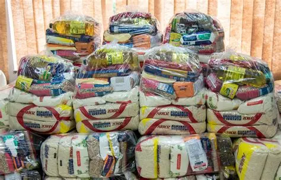

Nossa Startup
O TodosPeloBem é uma startup social criada com o propósito de conectar solidariedade e impacto real.
Nosso objetivo é oferecer uma plataforma transparente e acessível para que pessoas e empresas possam contribuir diretamente em ações que transformam vidas.
Almoços e Cafés Solidários
Crianças Vulneráveis
Pessoas sem Moradia
Tratamentos de Doenças